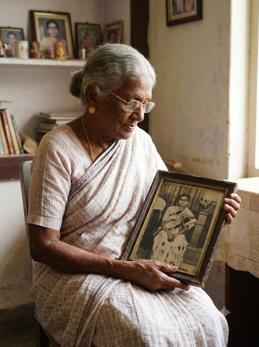
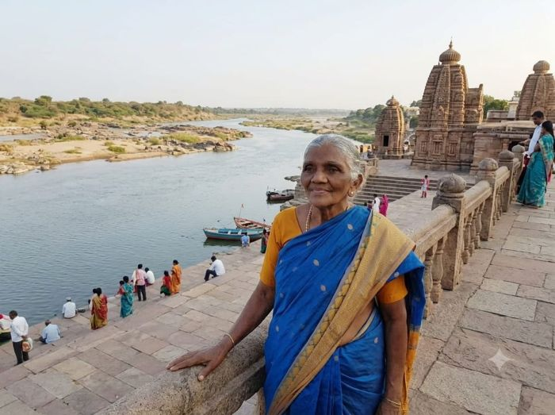
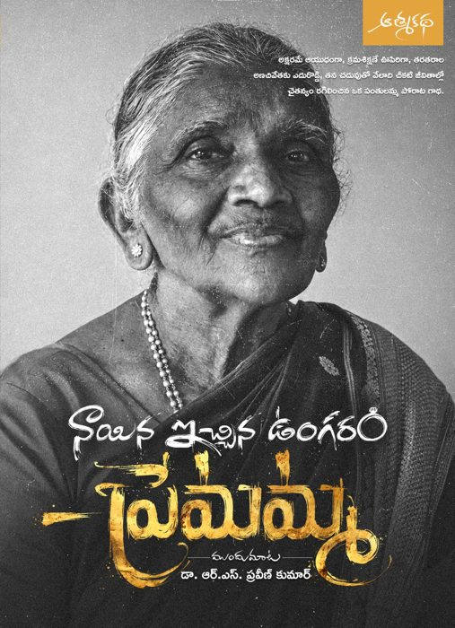

Born in 1942 into a poor, oppressed family, she studied against every odd, became a teacher, and went door to door to bring children to school. She raised an IPS officer, a professor and a doctor — and now tells her story in her own words.
Read her storyThe reel of
her life
Six chapters · one life
1942
Chapter I
Born in Parumanchala
A poor, oppressed family in Kurnool district.

Girlhood
Chapter II
Against every odd
She kept studying through poverty and discrimination.

Service
Chapter III
Door to door
As a government teacher, she brought out-of-school children back to class.

Family
Chapter IV
A mother’s resolve
Through loss, she raised an IPS officer, a professor and a doctor.

Today
Chapter V
Alampur
On the Tungabhadra, still helping poor children study.

2026
Chapter VI
Her own words
Her autobiography, Naayina Ichina Ungaram.
అక్షరమే ఆయుధంగా, క్రమశిక్షణే ఊపిరిగా, తరతరాల అణచివేతకు ఎదురొడ్డి, తన చదువుతో వేలాది చీకటి జీవితాల్లో చైతన్యం రగిలించిన ఒక పంతులమ్మ పోరాట గాథ.
With the alphabet as her weapon and discipline as her breath, she stood up to generations of oppression — the story of a schoolteacher whose learning lit a spark in thousands of lives lived in darkness.
— from the cover of Naayina Ichina Ungaram

The Book · ఆత్మకథ
నాయిన ఇచ్చిన ఉంగరం
Naayina Ichina Ungaram — “The Ring My Father Gave”
Premamma’s autobiography, in Telugu: a girl from Parumanchala who refused to let poverty and discrimination keep her from school, and spent her life making sure other children could learn too. With a foreword by her son, Dr. R. S. Praveen Kumar.
Language
Telugu
Genre
Autobiography
Foreword
Dr. R. S. Praveen Kumar
Book Release
Sunday, 6 December 2026 · 5:30 pm
Centre for Dalit Studies, Mothi Nagar, Borabanda, Hyderabad. Chief guest Juluri Gouri Shankar, former Chairman of the Telangana Sahitya Akademi; presided by Dr. Pasunoori Ravinder.
Counting down
–
Days
–
Hours
–
Minutes
Moments
Her life today
Readers say